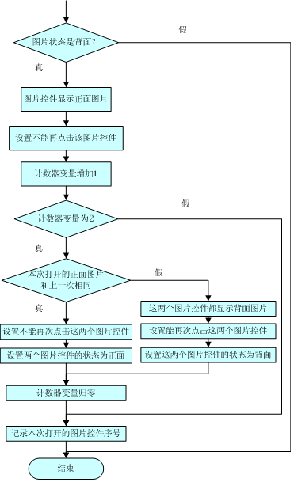

1) 要求1：窗体打开时所有图片控件显示全部为背面图片（同学可以尝试稍做变动加以体会，例如在极短的时间内全部显示正面图片再回到全部背面的界面）。
2) 要求2：用户只能由背面图片打开正面图片，连续点击两个图片控件，即图片控件为正面时，由程序来控制是否返回到背面，而不是由用户来人工控制（这一条要求是为了教学时简化处理，同学可以在完成本章后，尝试取消这一条要求）。
3) 要求3：在显示两个正面图片的情况下，如果两个正面图片相同，就保持显示（同学可以尝试稍做变动加以体会，例如将这2个图片消失掉），否则就让这两个图片控件都显示背面图片（同学可以尝试稍做变动加以体会，例如只关闭第一个正面图片）。
要求1已经满足，为满足要求2，将图片控件为正面时的点击处理关闭掉，即注释掉源代码13方法pbClick中的7~11行。 设置一个计数器变量count来记录点击次数，当count为2时，判断当前打开的图片是否和上次打开的图片相同，如果相同，则不能再点击这两张图片，否则，将两个图片控件都显示为背面图片，其逻辑流程如图 CSG 26所示。
图CSG 26 pbClick流程图
根据程序流程设计更改pbClick方法，如源代码16所示。
源代码 16 更改后的pbClick方法
1) 延迟关闭
2) 或：关闭之前显示一个动画
这部分内容属于游戏效果和用户体验的改进，因为本章游戏逻辑处理内容已经比较耗时，这些改进的实现方法放到下一章去讲。 思考：观察图CSG 26 pbClick流程图和源代码16中对于图片控件状态的记录，可以发现flaglist是人为和图片控件pList联系在一起的，也就是说需要程序员自己明白它俩之间的联系，能否把flaglist 和pList封装到一起呢？答案是可以的，连count也可以封装进去。建议应用面向对象的设计思想来加以改进。本教程限于篇幅和难度，不再展开。© room-365.com sh 2011 China